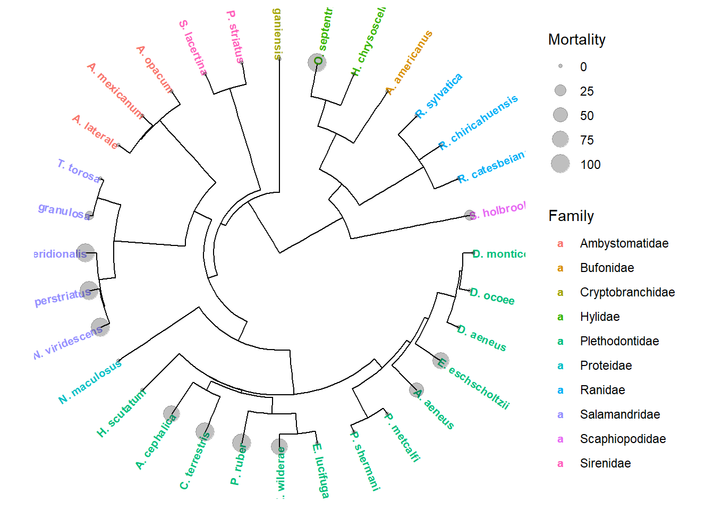
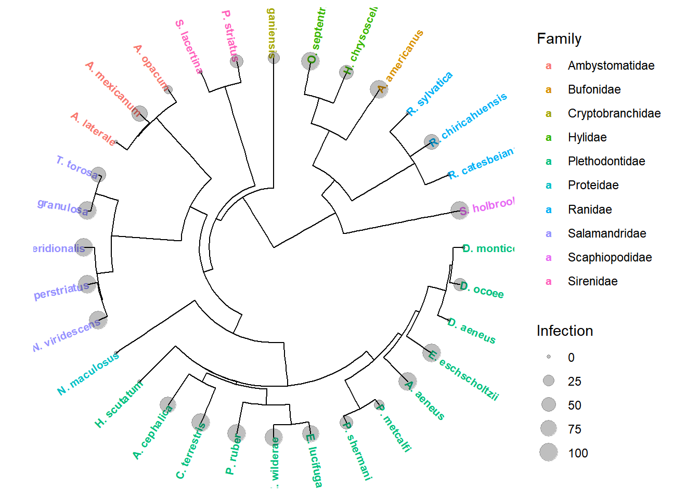

Carter TWS Poster Page
Thanks for using the QR code! Hopefully you will find the Links/Supplementary files included on this page informative. Also, feel free to peruse my website!
Published Research Relating to this work
Conservation risk of Batrachochytrium salamandrivorans to endemic lungless salamanders Carter et al. 2019
Differentiating Batrachochytrium dendrobatidis and B. salamandrivorans in Amphibian Chytridiomycosis Using RNAScope in situ Hybridization Ossiboff et al. 2019
Phylogenetic Tree showing clustering of clinical susceptibility (% Mortality) for species tested
 ##
Phylogenetic tree showing clustering of infection (% infected) for species challenged with Bsal 
| Lifestage | Order | Family | ID50 | LD50 | Infectiona | Mortality | Avg.Copies | Max.Copies | Incubation.P | |
|---|---|---|---|---|---|---|---|---|---|---|
| A. laterale | Adult | Caudata | Ambystomatidae | NA | NA | 0 | 0 | 0.0 | 0.0 | 90 |
| A. mexicanum | Adult | Caudata | Ambystomatidae | 32722 | NA | 70 | 0 | 1.0 | 3.0 | 23 |
| A. opacum | Adult | Caudata | Ambystomatidae | 8629543 | NA | 10 | 0 | 0.3 | 0.4 | 4 |
| A. americanus | Adult | Anura | Bufonidae | NA | NA | 100 | 0 | 646.0 | 14769.0 | 4 |
| A. aeneus | Adult | Caudata | Plethodontidae | 5320 | 660792 | 100 | 50 | 909.0 | 145.0 | 14 |
| A. cephalica | Adult | Caudata | Plethodontidae | 31960 | 15983 | 75 | 75 | 17.0 | 40.0 | 4 |
| C. terrestris | Adult | Caudata | Plethodontidae | 4248 | 43279 | 100 | 100 | 68738.0 | 327533.0 | 5 |
| C. alleganiensis | Adult | Caudata | Cryptobranchidae | 262429775 | NA | 29 | 0 | 0.2 | 0.6 | 25 |
| D. aeneus | Adult | Caudata | Plethodontidae | NA | NA | 0 | 0 | 0.0 | 0.0 | 90 |
| D. monticola | Adult | Caudata | Plethodontidae | NA | NA | 0 | 0 | 0.0 | 0.0 | 90 |
| D. ocoee | Adult | Caudata | Plethodontidae | NA | NA | 36 | 0 | 9.0 | 108.0 | 4 |
| E. eschscholtzii | Adult | Caudata | Plethodontidae | 6203 | 712355 | 100 | 75 | 14150.0 | 125993.0 | 4 |
| E. lucifuga | Adult | Caudata | Plethodontidae | 105417 | NA | 80 | 0 | 101.0 | 675.0 | 7 |
| E. wilderae | Adult | Caudata | Plethodontidae | 30380 | 2689202 | 93 | 71 | 58938.0 | 120843.0 | 9 |
| H. scutatum | Adult | Caudata | Plethodontidae | NA | NA | 0 | 0 | 0.0 | 0.0 | 90 |
| H. chrysoscelis | Adult | Anura | Hylidae | 4862056 | NA | 50 | 0 | 63.0 | 403.0 | 6 |
| N. maculosus | Adult | Caudata | Proteidae | NA | NA | 0 | 0 | 0.0 | 0.0 | 90 |
| N. meridionalis | Adult | Caudata | Salamandridae | 3224 | 18894 | 100 | 100 | 23279.0 | 136703.0 | 4 |
| N. perstriatus | Adult | Caudata | Salamandridae | <5000 | 71767 | 100 | 100 | 14422.0 | 74590.0 | 4 |
| N. viridescens | Adult | Caudata | Salamandridae | 2897 | 2897 | 100 | 100 | 4863.0 | 25176.0 | 7 |
| O. septentrionalis | Adult | Anura | Hylidae | 15921 | 402626 | 100 | 100 | 105775.0 | 383952.0 | 10 |
| P. metcalfi | Adult | Caudata | Plethodontidae | 51557779 | NA | 20 | 0 | 8.0 | 56.0 | 13 |
| P. shermani | Adult | Caudata | Plethodontidae | 5333254 | NA | 43 | 0 | 8.0 | 30.0 | 18 |
| P. striatus | Juvenile/Adult | Caudata | Sirenidae | 4828183 | NA | 43 | 0 | 197.0 | 803.0 | 4 |
| P. ruber | Adult | Caudata | Plethodontidae | 8658 | 1570687 | 100 | 100 | 88384.0 | 338869.0 | 4 |
| R. catesbeiana | Adult | Anura | Ranidae | NA | NA | 0 | 0 | 0.0 | 0.0 | 90 |
| R. chiricahuensis | Adult | Anura | Ranidae | 4496360 | 0 | 63 | 0 | 16.0 | 151.0 | 4 |
| R. sylvatica | Adult | Anura | Ranidae | NA | NA | 0 | 0 | 0.0 | 0.0 | 90 |
| S. holbrookii | Adult | Anura | Scaphiopodidae | 198808 | 7094481 | 100 | 20 | 1934.0 | 14594.0 | 4 |
| S. lacertina | Adult | Caudata | Sirenidae | NA | NA | 0 | 0 | 0.0 | 0.0 | 90 |
| T. granulosa | Adult | Caudata | Salamandridae | 5925 | 4862056 | 100 | 10 | 18619.0 | 165657.0 | 4 |
| T. torosa | Adult | Caudata | Salamandridae | 450990 | NA | 60 | 0 | 80.0 | 608.0 | 31 |
Conceptual Framework of Susceptibility
Plotting the ID50 and LD50 values calculated for each species that experienced mortality and infection allows us to begin formulating ideas regarding their epidemiological role in Bsal disease dynamics. Species can be seperated into four categories.
1. Resistant species that do not become infected
2. Carriers species that become infected but do not experience mortality
3. Highly susceptible species which become infected easily and die from the pathogen
4. Superspreaders (Amplification hosts) species which become infected at low doses but are tolerant of infection and persist for long durations of time

Graph showing categories of susceptibility and clustering of species based on ID50 and LD50 values
Representative photos of Bsal lesions observed on several North American amphibian species
.JPG)
Focal lesions observed on an Eastern Newt (Notophthalmus viridescens)

Focal lesions observed on a Rough skinned newt (Taricha granulosa)

Large ulceration and focal lesions observed on a Yellow-spotted salamander (Ensatina erschoscholerii
Photos of Bsal Zoospores and Zoosporangia stained with Calcoflour White (CFW) at various magnifications

10X Magnification+CFW

20X Magnification+CFW